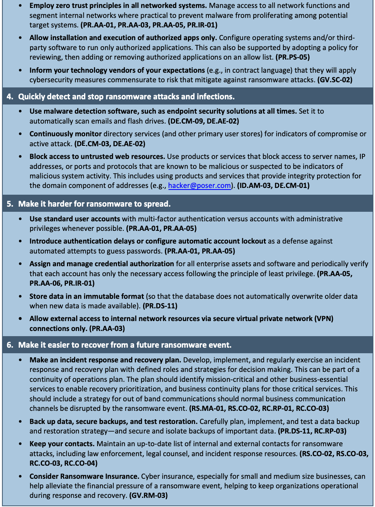

NIST IR 8374 Rev. 1 日本語訳
英語タイトル : Ransomware Risk Management: A Cybersecurity Framework 2.0 Community Profile日本語タイトル : ランサムウェアのリスク管理：サイバーセキュリティフレームワーク 2.0 コミュニティプロファイル
公開日 : 2026-06-11
原文URL : https://csrc.nist.gov/pubs/ir/8374/r1/final
翻訳編集 : 自動生成（有志による非公式の日本語訳）, 原文取得日 : 2026-10-31, 訳文 : 140 / 141 ブロック
[要約] NIST IR 8374 Rev. 1 は、ランサムウェアのイベントに対する統治管理、識別、防御、検知、対応、復旧を支える NIST CSF 2.0 のセキュリティ上の成果を特定する、サイバーセキュリティフレームワーク（CSF）2.0 コミュニティプロファイルです。ランサムウェアは、攻撃者が組織のデータを暗号化し、アクセスを回復する対価として支払いを要求する悪意ある攻撃の一種であり、追加の支払いを求めて組織の情報を窃取する場合もあります。このプロファイルは、ランサムウェアのイベントのリスクを管理するための指針として使用でき、ランサムウェアの脅威に対抗し、イベントによる潜在的な影響に対処するための組織の準備態勢の水準を測るのに役立ちます。ランサムウェア対策のプレイブックを策定する際にも活用できるとされ、ランサムウェア対策の基本的なヒントとコミュニティプロファイルを収めています。
NIST Internal Report NIST IR 8374r1
NIST 内部報告書 NIST IR 8374r1
Ransomware Risk Management:
ランサムウェアのリスク管理:
A Cybersecurity Framework 2.0 Community Profile
サイバーセキュリティフレームワーク 2.0 コミュニティプロファイル
Murugiah Souppaya William C. Barker William Fisher Karen Kent
Murugiah Souppaya William C. Barker William Fisher Karen Kent
This publication is available free of charge from: https://doi.org/10.6028/NIST.IR.8374r1
本刊行物は次のサイトから無償で入手できます: https://doi.org/10.6028/NIST.IR.8374r1
NIST Internal Report NIST IR 8374r1
NIST 内部報告書 NIST IR 8374r1
Ransomware Risk Management:
ランサムウェアのリスク管理:
A Cybersecurity Framework 2.0 Community Profile
サイバーセキュリティフレームワーク 2.0 コミュニティプロファイル
Murugiah Souppaya*
Murugiah Souppaya*
Computer Security Division
コンピュータセキュリティ部門
Information Technology Laboratory
情報技術研究所
William C. Barker
William C. Barker
Guest Researcher
客員研究員
Information Technology Laboratory
情報技術研究所
William Fisher
William Fisher
Applied Cybersecurity Division
応用サイバーセキュリティ部門
Information Technology Laboratory
情報技術研究所
Karen Kent
Karen Kent
Trusted Cyber Annex
Trusted Cyber Annex
* Former employee; all work for this publication was done while at NIST.
* 元職員。本刊行物に関するすべての作業は NIST 在籍中に行われました。
This publication is available free of charge from: https://doi.org/10.6028/NIST.IR.8374r1
本刊行物は次のサイトから無償で入手できます: https://doi.org/10.6028/NIST.IR.8374r1
June 2026
2026 年 6 月
［米国商務省の紋章。公的な標章のため、この非公式サイトには掲載していません。原本 PDF を参照してください。］
U.S. Department of Commerce Howard Lutnick, Secretary
米国商務省 Howard Lutnick 長官
National Institute of Standards and Technology
国立標準技術研究所
Arvind Raman, NIST Director and Under Secretary of Commerce for Standards and Technology
Arvind Raman NIST 所長兼商務次官（標準・技術担当）
Certain equipment, instruments, software, or materials, commercial or non-commercial, are identified in this paper in order to specify the experimental procedure adequately. Such identification does not imply recommendation or endorsement of any product or service by NIST, nor does it imply that the materials or equipment identified are necessarily the best available for the purpose.
本書では、実験手順を適切に特定するために、商用・非商用を問わず、特定の機器、計器、ソフトウェア、または資料を明示している場合があります。こうした明示は、NIST がいかなる製品やサービスも推奨または支持していることを意味するものではなく、明示された資料や機器がその目的に最適であることを意味するものでもありません。
There may be references in this publication to other publications currently under development by NIST in accordance with its assigned statutory responsibilities. The information in this publication, including concepts and methodologies, may be used by federal agencies even before the completion of such companion publications. Thus, until each publication is completed, current requirements, guidelines, and procedures, where they exist, remain operative. For planning and transition purposes, federal agencies may wish to closely follow the development of these new publications by NIST.
本刊行物には、NIST が法令で定められた責務に従って現在策定中の他の刊行物への言及が含まれる場合があります。本刊行物の情報は、概念や方法論を含め、そうした関連刊行物の完成前であっても、連邦機関が利用してもかまいません。したがって、各刊行物が完成するまでは、現行の要件、ガイドライン、手順が存在する場合は、それらが引き続き有効です。計画や移行のために、連邦機関は NIST によるこれらの新しい刊行物の策定を注意深く見守ることが望ましいです。
Organizations are encouraged to review all draft publications during public comment periods and provide feedback to NIST. Many NIST cybersecurity publications, other than the ones noted above, are available at https://csrc.nist.gov/publications.
各組織は、公開意見募集の期間中にすべてのドラフト刊行物を確認し、NIST にフィードバックを提供することが推奨されます。上記以外の多くの NIST サイバーセキュリティ刊行物は https://csrc.nist.gov/publications で入手できます。
NIST Technical Series Policies Copyright, Use, and Licensing Statements NIST Technical Series Publication Identifier Syntax
NIST 技術シリーズのポリシー 著作権、利用、およびライセンスに関する声明 NIST 技術シリーズ刊行物の識別子の構文
Publication History Approved by the NIST Editorial Review Board on 2026-04-30. Supersedes NIST IR 8374 (February 2022) https://doi.org/10.6028/NIST.IR.8374
刊行の履歴 2026-04-30 に NIST 編集審査委員会により承認。NIST IR 8374（2022 年 2 月）を置き換えます https://doi.org/10.6028/NIST.IR.8374
How to Cite this NIST Technical Series Publication Souppaya M, Barker WC, Fisher W, Scarfone K. (2026) Ransomware Risk Management: A Cybersecurity Framework 2.0 Community Profile. (National Institute of Standards and Technology, Gaithersburg, MD), NIST Internal Report (IR) NIST IR 8374r1. https://doi.org/10.6028/NIST.IR.8374r1
本 NIST 技術シリーズ刊行物の引用方法 Souppaya M, Barker WC, Fisher W, Scarfone K. (2026) Ransomware Risk Management: A Cybersecurity Framework 2.0 Community Profile. (National Institute of Standards and Technology, Gaithersburg, MD), NIST Internal Report (IR) NIST IR 8374r1. https://doi.org/10.6028/NIST.IR.8374r1
Author ORCID iDs Murugiah Souppaya: 0000-0002-8055-8527 William C. Barker: 0000-0002-4113-8861 William Fisher: 0009-0004-7569-5668 Karen Scarfone: 0000-0001-6334-9486
著者の ORCID iD Murugiah Souppaya: 0000-0002-8055-8527 William C. Barker: 0000-0002-4113-8861 William Fisher: 0009-0004-7569-5668 Karen Scarfone: 0000-0001-6334-9486
Contact Information ransomware@nist.gov
連絡先 ransomware@nist.gov
National Institute of Standards and Technology Attn: Applied Cybersecurity Division, Information Technology Laboratory 100 Bureau Drive (Mail Stop 2000) Gaithersburg, MD 20899-2000
National Institute of Standards and Technology Attn: Applied Cybersecurity Division, Information Technology Laboratory 100 Bureau Drive (Mail Stop 2000) Gaithersburg, MD 20899-2000
Additional Information Additional information about this publication is available at https://csrc.nist.gov/pubs/ir/8374/r1/final, including related content, potential updates, and document history.
追加情報 本刊行物に関する追加情報（関連コンテンツ、更新の可能性、文書の履歴を含む）は、https://csrc.nist.gov/pubs/ir/8374/r1/final で入手できます。
All comments are subject to release under the Freedom of Information Act (FOIA)
すべてのコメントは、情報自由法（FOIA）に基づいて公開される場合があります。
Abstract
概要
Ransomware is a type of malicious attack where attackers encrypt an organization’s data and demand payment to restore access. Attackers may also steal an organization’s information and demand an additional payment in return for not disclosing the information to authorities, competitors, or the public. This Cybersecurity Framework (CSF) 2.0 Community Profile identifies the security outcomes from the NIST CSF 2.0 that support governing management of, identifying, protecting against, detecting, responding to, and recovering from ransomware events. The Profile can be used as a guide to managing the risk of ransomware events. That includes helping to gauge an organization’s level of readiness to counter ransomware threats and to deal with the potential consequences of events. This Profile can be leveraged in developing a ransomware countermeasure playbook.
ランサムウェアは、攻撃者が組織のデータを暗号化し、アクセスを回復する対価として支払いを要求する、悪意ある攻撃の一種です。攻撃者はまた、組織の情報を窃取し、その情報を当局、競合他社、または一般に開示しない見返りとして、追加の支払いを要求する場合があります。このサイバーセキュリティフレームワーク（CSF）2.0コミュニティプロファイルは、ランサムウェア事象の管理を統治し、ランサムウェア事象を識別、防御、検知、対応、復旧することを支援する、NIST CSF 2.0のセキュリティ上の成果を特定します。このプロファイルは、ランサムウェア事象のリスクを管理するための指針として使用できます。これには、ランサムウェアの脅威に対抗し、事象による潜在的な影響に対処するための組織の準備態勢の水準を測るのに役立つことも含まれます。このプロファイルは、ランサムウェア対策のプレイブックを策定する際に活用できます。
Keywords
キーワード
Cybersecurity Framework; detect; identify; protect; ransomware; recover; respond; risk; security.
サイバーセキュリティフレームワーク、検知、識別、防御、ランサムウェア、復旧、対応、リスク、セキュリティ。
Reports on Computer Systems Technology
コンピュータシステム技術に関する報告書
The Information Technology Laboratory (ITL) at the National Institute of Standards and Technology (NIST) promotes the U.S. economy and public welfare by providing technical leadership for the Nation’s measurement and standards infrastructure. ITL develops tests, test methods, reference data, proof of concept implementations, and technical analyses to advance the development and productive use of information technology. ITL’s responsibilities include the development of management, administrative, technical, and physical standards and guidelines for the cost-effective security and privacy of information other than national security-related information in federal information systems.
国立標準技術研究所（NIST）の情報技術研究所（ITL）は、国の計測・標準インフラストラクチャに関する技術的リーダーシップを提供することにより、米国の経済と公共の福祉を促進しています。ITL は、情報技術の開発と生産的な利用を推進するため、テスト、テスト方法、参照データ、概念実証の実装、技術分析を策定しています。ITL の責務には、連邦情報システムにおける国家安全保障に関するもの以外の情報について、そのセキュリティとプライバシーを費用対効果の高い形で確保するための、管理上、運用上、技術上、物理上の標準とガイドラインの策定が含まれます。
Audience
想定読者
This Ransomware Community Profile is intended for any organization (including industry, government, and nonprofits) that could be subject to ransomware attacks, regardless of sector or size. As the Profile helps to prioritize efforts, it could be especially valuable for smaller and less resourced organizations.
このランサムウェアコミュニティプロファイルは、業種や規模を問わず、ランサムウェア攻撃を受ける可能性のあるあらゆる組織（産業界、政府機関、非営利団体を含む）を対象としています。このプロファイルは取り組みの優先順位付けに役立つため、規模が小さくリソースが限られた組織にとって、特に有用となる可能性があります。
In addition, the Profile is intended for organizations that:
加えて、このプロファイルは、次のような組織を対象としています。
•are familiar with—and may have already adopted—the CSF to help manage cybersecurity risks and want to improve their risk postures by addressing ransomware threats, or
•サイバーセキュリティリスクの管理に役立てるため CSF に精通しており（すでに採用している場合もあります）、ランサムウェアの脅威に対処することでリスク態勢を改善したいと考えている組織。
•are not familiar with the CSF but want to implement risk management frameworks to mitigate ransomware threats. Such organizations may wish to review the CSF for additional context and guidelines.
•CSF には精通していないものの、ランサムウェアの脅威を緩和するためにリスク管理フレームワークを実装したいと考えている組織。このような組織は、追加の背景情報とガイドラインを得るため、CSF を確認すべきです。
Additional Resources
追加のリソース
NIST’s National Cybersecurity Center of Excellence (NCCoE) has produced guidelines to support ransomware threat mitigation. NIST has many other resources that, while not ransomware-specific, contain valuable information about governing management of, identifying, protecting against, detecting, responding to, and recovering from ransomware events. See Appendix A for a more extensive list of NIST resources.
NISTのNational Cybersecurity Center of Excellence（NCCoE）は、ランサムウェアの脅威の緩和を支援するガイドラインを作成しています。NISTには、ランサムウェア固有のものではないものの、ランサムウェア事象の管理を統治し、識別、防御、検知、対応、復旧することに関する貴重な情報を含む、その他多くのリソースがあります。NISTのリソースのより網羅的な一覧については、付録Aを参照してください。
Patent Disclosure Notice
特許開示に関する通知
NOTICE: ITL has requested that holders of patent claims whose use may be required for compliance with the guidance or requirements of this publication disclose such patent claims to ITL. However, holders of patents are not obligated to respond to ITL calls for patents and ITL has not undertaken a patent search in order to identify which, if any, patents may apply to this publication.
通知: ITL は、本刊行物のガイダンスや要件への準拠に使用が必要となる可能性のある特許請求項の保有者に対し、そのような特許請求項を ITL に開示するよう要請しました。ただし、特許の保有者には ITL の特許照会に応答する義務はなく、ITL は、本刊行物に該当する特許があるとすればどれであるかを特定するための特許調査を実施していません。
As of the date of publication and following call(s) for the identification of patent claims whose use may be required for compliance with the guidance or requirements of this publication, no such patent claims have been identified to ITL.
本刊行物のガイダンスや要件への準拠に使用が必要となる可能性のある特許請求項の特定を求める照会を行った結果、刊行日の時点で、そのような特許請求項は ITL に対して特定されていません。
No representation is made or implied by ITL that licenses are not required to avoid patent infringement in the use of this publication.
ITL は、本刊行物の使用にあたり、特許侵害を避けるためにライセンスが不要であることを表明も示唆もしていません。
Table of Contents
目次
1. Introduction
1. はじめに
This Ransomware Community Profile can help organizations and individuals manage the risk of ransomware events. That includes helping gauge an organization’s readiness to counter ransomware threats and to address the potential consequences of events. The Profile can also be used to identify opportunities to improve cybersecurity and help thwart ransomware. It prioritizes security outcomes from the NIST Cybersecurity Framework (CSF) 2.0 [NIST CSWP 29] to security capabilities and measures that help to govern management of, identify, protect against, detect, respond to, and recover from ransomware events.
このランサムウェアコミュニティプロファイルは、組織や個人がランサムウェア事象のリスクを管理するのに役立ちます。これには、ランサムウェアの脅威に対抗し、事象による潜在的な影響に対処するための組織の準備態勢を測るのに役立つことも含まれます。このプロファイルは、サイバーセキュリティを改善する機会を特定し、ランサムウェアの阻止に役立てるためにも使用できます。このプロファイルは、ランサムウェア事象の管理を統治し、識別、防御、検知、対応、復旧するのに役立つセキュリティ機能と対策に対し、NISTサイバーセキュリティフレームワーク（CSF）2.0 [NIST CSWP 29]のセキュリティ上の成果を優先的に対応付けています。
This Community Profile was developed in collaboration with industry to serve as a baseline of CSF outcomes that address shared interests and goals among multiple organizations. Individual organizations may use Community Profiles to create their own Organizational Profile, detailing their current and/or target cybersecurity posture in terms of the outcomes identified in the CSF. Examples of profiles can be found on the NIST CSF website, along with a template for creating Organizational Profiles. The guidelines in this report address best practices rather than a set of legal or regulatory requirements.
このコミュニティプロファイルは、複数の組織に共通する関心と目標に対処する CSF の成果のベースラインとして機能するよう、産業界と協力して策定しました。各組織は、コミュニティプロファイルを使って、CSF で特定された成果の観点から、現在のサイバーセキュリティ態勢か目標とするサイバーセキュリティ態勢（またはその両方）を詳述した、独自の組織プロファイルを作成できます。プロファイルの例は、組織プロファイルを作成するためのテンプレートとともに、NIST CSF の Web サイトにあります。本報告書のガイドラインは、法的要件や規制要件の集合ではなく、ベストプラクティスを扱っています。
1.1 The Ransomware Challenge
1.1 ランサムウェアという課題
Ransomware is a type of malicious software (malware) that encrypts an organization’s data and demands payment as a condition of restoring access to that data. Ransomware can also be used to steal an organization’s information and demand additional payment in return for not disclosing the information to authorities, competitors, or the public. Ransomware events target the organization’s data or critical infrastructure, disrupting or halting operations and posing a dilemma for management: pay the ransom and hope the attackers keep their word to restore access and not disclose data, or do not pay the ransom and attempt to restore operations themselves. The methods ransomware uses to gain access to an organization’s information and systems are common to cyberattacks more broadly, but they are aimed at forcing a ransom to be paid. Techniques used to spread ransomware will continue to evolve as attackers seek new ways to pressure their victims.
ランサムウェアは、組織のデータを暗号化し、そのデータへのアクセスを回復する条件として支払いを要求する、悪意あるソフトウェア（マルウェア）の一種です。ランサムウェアは、組織の情報を窃取し、その情報を当局、競合他社、一般に開示しないことの見返りとして追加の支払いを要求するためにも使われます。ランサムウェアのイベントは、組織のデータや重要インフラストラクチャを標的とし、業務を妨害または停止させ、経営陣にジレンマを突きつけます。身代金を支払い、攻撃者がアクセスを回復してデータを開示しないという約束を守ることを期待するか、身代金を支払わず、自力で業務の復旧を試みるかです。ランサムウェアが組織の情報やシステムにアクセスするために使う手法は、より広くサイバー攻撃一般に共通するものですが、身代金の支払いを強要することを目的としています。ランサムウェアを拡散させるために使われる手法は、攻撃者が被害者に圧力をかける新たな方法を模索するにつれて、進化し続けます。
Ransomware attacks differ from other cybersecurity events in which access may be surreptitiously gained to information such as intellectual property, credit card data, or personally identifiable information, and later exfiltrated for monetization. Instead, ransomware threatens an immediate and known impact on business operations. During a ransomware event, organizations may have little time to mitigate or remediate the impact, restore systems, or communicate via necessary business, partner, and public relations channels. For this reason, it is especially critical that organizations be prepared. That includes having cybersecurity governance that integrates into enterprise risk management for a holistic view and treatment of ransomware risks. Users, security and response teams, and business decision makers, should be educated about the importance of—and processes and procedures for—preventing and handling potential compromises, before they occur.
ランサムウェア攻撃は、知的財産、クレジットカードデータ、個人を特定できる情報などの情報に密かにアクセスし、後で金銭化するために外部へ持ち出すという、他のサイバーセキュリティイベントとは異なります。ランサムウェアは、その代わりに、事業運営への即時かつ既知の影響を脅かします。ランサムウェアのイベントの間、組織には、影響を緩和または是正し、システムを復旧し、必要な事業、パートナー、広報の経路を通じて連絡を取るための時間がほとんどない場合があります。このため、組織が備えておくことが特に重要です。これには、ランサムウェアのリスクを包括的に捉えて対処できるよう、エンタープライズリスク管理に統合されたサイバーセキュリティガバナンスを備えることが含まれます。ユーザー、セキュリティチーム、対応チーム、事業上の意思決定者は、侵害が発生する前に、その防止と対処の重要性、およびそのためのプロセスと手順について教育を受けておくべきです。
Fortunately, organizations can follow recommended steps to prepare for and reduce the potential for successful ransomware attacks. This includes the following:
幸いなことに、組織は、推奨される手順に従って、ランサムウェア攻撃が成功する可能性に備え、それを低減できます。これには、次のものが含まれます。
•establish, communicate, and monitor ransomware risk strategy, expectations, and policy;
•ランサムウェアのリスク戦略、期待事項、ポリシーを確立し、周知し、監視します。
•identify, prioritize, and protect critical data, systems, and devices;
•重要なデータ、システム、デバイスを特定し、優先順位を付け、保護します。
•detect ransomware events as early as possible (preferably before the ransomware is deployed); and
•ランサムウェアのイベントを可能な限り早期に（できればランサムウェアが展開される前に）検知します。
•prepare to respond to and recover from any ransomware events that do occur.
•発生したランサムウェアのイベントへの対応と復旧に備えます。
Additional NIST resources are listed in Appendix A.
NIST のその他のリソースは、付録 A に一覧を示します。
1.2 Basic Ransomware Tips
1.2 ランサムウェア対策の基本的なヒント
Ransomware remains one of the most disruptive cyber threats facing organizations today. Recognizing that not every organization has the resources to implement every measure, the following essential practices offer a foundation for protection. These steps and tips are mapped to the CSF and designed to be immediately actionable and adaptable to diverse operational environments. Not all these measures will apply to the situations of all organizations.
ランサムウェアは、今日、組織が直面する最も破壊的なサイバー脅威の一つであり続けています。すべての組織がすべての対策を実装するためのリソースを備えているわけではないことを踏まえ、以下の基本的な実践事項は、保護の基盤となります。これらの手順とヒントは CSF に対応付けられており、すぐに実行でき、多様な運用環境に適応できるように設計されています。これらの対策のすべてが、あらゆる組織の状況に適用されるわけではありません。
ランサムウェア対策の基本的なヒント
Even without undertaking all the measures described in this Ransomware Community Profile, there are some basic preventive steps that an organization can take now to protect against and recover from the ransomware threat. These include:
このランサムウェアコミュニティプロファイルに記載されたすべての対策を実施しなくても、ランサムウェアの脅威からの保護と復旧のために、組織が今すぐ取れる基本的な予防措置がいくつかあります。これには、次のものが含まれます。
1.Plan for Ransomware Events.
1.ランサムウェアのイベントに備えて計画します。
•Establish organizational priorities and determine risk appetite to guide the selection of ransomware mitigations that align with business needs and risks. (GV.OC-01, GV.RM-02, GV.RM-03)
•組織の優先事項を確立し、リスク選好度を決定して、事業上のニーズとリスクに沿ったランサムウェア対策の選択を導きます。(GV.OC-01, GV.RM-02, GV.RM-03)
•Know your decision makers. Determine cybersecurity roles and responsibilities to facilitate accountability and clear decision making for cybersecurity risk. (GV.RR-02)
•意思決定者を把握します。サイバーセキュリティのリスクに対する説明責任と明確な意思決定を促進するため、サイバーセキュリティの役割と責任を定めます。(GV.RR-02)
•Enumerate legal requirements. Understand and manage the legal, regulatory, and contractual requirements that impact cybersecurity risks and response. (GV.OC-03)
•法的要件を列挙します。サイバーセキュリティのリスクと対応に影響する、法令、規制、契約上の要件を理解し、管理します。(GV.OC-03)
2.Educate employees on avoiding ransomware infections.
2.ランサムウェア感染を避けるよう従業員を教育します。
•Conduct regular phishing and social media simulations to train employees not to open files or click on links from unknown sources. (PR.AT-01)
•定期的にフィッシングとソーシャルメディアの模擬訓練を実施し、不明な送信元のファイルを開いたりリンクをクリックしたりしないよう従業員を訓練します。(PR.AT-01)
•Educate employees on the risk of connecting personally owned devices to work networks through annual training and regular security reminders. (PR.AT-01)
•年次研修と定期的なセキュリティの注意喚起を通じて、私物デバイスを職場のネットワークに接続するリスクについて従業員を教育します。(PR.AT-01)
•Create a culture of incident reporting that avoids placing blame on employees for actions that cause cyber risks and instead empower employees by encouraging them to immediately notify security of suspected cyber events. (PR.AT-01)
•インシデント報告の文化を築き、サイバーリスクを引き起こす行為について従業員を非難することを避け、代わりに、サイバーイベントの疑いがあれば直ちにセキュリティ担当者に通知するよう従業員に促すことで、従業員を力づけます。(PR.AT-01)
3.Avoid having vulnerabilities in systems that ransomware could exploit.
3.ランサムウェアに悪用されうる脆弱性をシステムに残しません。
•Keep relevant systems fully patched. Run scheduled checks to identify available patches and install these as soon as feasible. (ID.AM-02, PR.PS-01)
•関連するシステムに常に最新のパッチを適用します。入手可能なパッチを特定するための確認を定期的に実行し、可能な限り速やかにインストールします。(ID.AM-02, PR.PS-01)
•Employ zero trust principles in all networked systems. Manage access to all network functions and segment internal networks where practical to prevent malware from proliferating among potential target systems. (PR.AA-01, PR.AA-03, PR.AA-05, PR.IR-01)
原本PDFの抜粋画像

•すべてのネットワーク接続されたシステムにゼロトラストの原則を採用します。すべてのネットワーク機能へのアクセスを管理し、可能な範囲で内部ネットワークを分割して、マルウェアが標的となりうるシステム間で拡散するのを防ぎます。(PR.AA-01, PR.AA-03, PR.AA-05, PR.IR-01)
•Allow installation and execution of authorized apps only. Configure operating systems and/or third-party software to run only authorized applications. This can also be supported by adopting a policy for reviewing, then adding or removing authorized applications on an allow list. (PR.PS-05)
•認可されたアプリのインストールと実行のみを許可します。認可されたアプリケーションのみを実行するように、オペレーティングシステムやサードパーティ製ソフトウェア（あるいはその両方）を設定します。これは、許可リスト上の認可されたアプリケーションを確認し、追加または削除するポリシーを採用することでも支援できます。(PR.PS-05)
•Inform your technology vendors of your expectations (e.g., in contract language) that they will apply cybersecurity measures commensurate to risk that mitigate against ransomware attacks. (GV.SC-02)
•技術ベンダーに期待事項を伝え（たとえば契約書の文言で）、ランサムウェア攻撃を緩和する、リスクに見合ったサイバーセキュリティ対策をベンダーが適用するようにします。(GV.SC-02)
4.Quickly detect and stop ransomware attacks and infections.
4.ランサムウェア攻撃と感染を迅速に検知して阻止します。
•Use malware detection software, such as endpoint security solutions at all times. Set it to automatically scan emails and flash drives. (DE.CM-09, DE.AE-02)
•エンドポイントセキュリティソリューションなどのマルウェア検知ソフトウェアを常時使用します。メールとフラッシュドライブを自動的にスキャンするように設定します。(DE.CM-09, DE.AE-02)
•Continuously monitor directory services (and other primary user stores) for indicators of compromise or active attack. (DE.CM-03, DE.AE-02)
•ディレクトリサービス（およびその他の主要なユーザーストア）を継続的に監視し、侵害の指標や進行中の攻撃を探します。(DE.CM-03, DE.AE-02)
•Block access to untrusted web resources. Use products or services that block access to server names, IP addresses, or ports and protocols that are known to be malicious or suspected to be indicators of malicious system activity. This includes using products and services that provide integrity protection for the domain component of addresses (e.g., hacker@poser.com). (ID.AM-03, DE.CM-01)
•信頼できない Web リソースへのアクセスをブロックします。悪意があることが知られている、または悪意あるシステム活動の指標であると疑われる、サーバー名、IP アドレス、ポート、プロトコルへのアクセスをブロックする製品やサービスを使用します。これには、アドレスのドメイン部分（例: hacker@poser.com）の完全性保護を提供する製品やサービスの使用が含まれます。(ID.AM-03, DE.CM-01)
5.Make it harder for ransomware to spread.
5.ランサムウェアを拡散しにくくします。
•Use standard user accounts with multi-factor authentication versus accounts with administrative privileges whenever possible. (PR.AA-01, PR.AA-05)
•可能な限り、管理者権限を持つアカウントではなく、多要素認証を備えた標準のユーザーアカウントを使用します。(PR.AA-01, PR.AA-05)
•Introduce authentication delays or configure automatic account lockout as a defense against automated attempts to guess passwords. (PR.AA-01, PR.AA-05)
•パスワードを推測する自動化された試行への防御として、認証の遅延を導入するか、アカウントの自動ロックアウトを設定します。(PR.AA-01, PR.AA-05)
•Assign and manage credential authorization for all enterprise assets and software and periodically verify that each account has only the necessary access following the principle of least privilege. (PR.AA-05, PR.AA-06, PR.IR-01)
•すべてのエンタープライズ資産とソフトウェアについて認証情報の認可を割り当てて管理し、最小権限の原則に従って、各アカウントが必要なアクセスのみを持っていることを定期的に検証します。(PR.AA-05, PR.AA-06, PR.IR-01)
•Store data in an immutable format (so that the database does not automatically overwrite older data when new data is made available). (PR.DS-11)
•（新しいデータが利用可能になったときに、データベースが古いデータを自動的に上書きしないよう）データを書き換え不能な形式で保存します。(PR.DS-11)
•Allow external access to internal network resources via secure virtual private network (VPN) connections only. (PR.AA-03)
•内部ネットワークのリソースへの外部からのアクセスは、安全な仮想プライベートネットワーク（VPN）接続を介する場合にのみ許可します。(PR.AA-03)
6.Make it easier to recover from a future ransomware event.
6.将来のランサムウェアのイベントから復旧しやすくします。
•Make an incident response and recovery plan. Develop, implement, and regularly exercise an incident response and recovery plan with defined roles and strategies for decision making. This can be part of a continuity of operations plan. The plan should identify mission-critical and other business-essential services to enable recovery prioritization, and business continuity plans for those critical services. This should include a strategy for out of band communications should normal business communication channels be disrupted by the ransomware event. (RS.MA-01, RS.CO-02, RC.RP-01, RC.CO-03)
•インシデント対応・復旧計画を作成します。役割と意思決定の戦略を定めたインシデント対応・復旧計画を策定、実装し、定期的に演習します。これは、事業継続計画の一部とすることができます。計画では、復旧の優先順位付けを可能にするため、ミッションクリティカルなサービスとその他の事業上不可欠なサービスを特定し、それらの重要なサービスの事業継続計画を示すべきです。これには、ランサムウェアのイベントによって通常の業務連絡経路が使えなくなった場合に備えた、帯域外通信の戦略を含めるべきです。(RS.MA-01, RS.CO-02, RC.RP-01, RC.CO-03)
•Back up data, secure backups, and test restoration. Carefully plan, implement, and test a data backup and restoration strategy—and secure and isolate backups of important data. (PR.DS-11, RC.RP-03)
•データをバックアップし、バックアップを保護し、復元をテストします。データのバックアップと復元の戦略を慎重に計画、実装、テストし、重要なデータのバックアップを保護して隔離します。(PR.DS-11, RC.RP-03)
•Keep your contacts. Maintain an up-to-date list of internal and external contacts for ransomware attacks, including law enforcement, legal counsel, and incident response resources. (RS.CO-02, RS.CO-03, RC.CO-03, RC.CO-04)
•連絡先を維持します。法執行機関、法律顧問、インシデント対応のリソースを含む、ランサムウェア攻撃に関する内部と外部の連絡先の最新の一覧を維持します。(RS.CO-02, RS.CO-03, RC.CO-03, RC.CO-04)
•Consider Ransomware Insurance. Cyber insurance, especially for small and medium size businesses, can help alleviate the financial pressure of a ransomware event, helping to keep organizations operational during response and recovery. (GV.RM-03)
•ランサムウェア保険を検討します。サイバー保険は、特に中小企業にとって、ランサムウェアのイベントによる金銭的な圧力を軽減し、対応と復旧の間も組織の運営を維持するのに役立ちます。(GV.RM-03)
2. The Ransomware Community Profile
2. ランサムウェアコミュニティプロファイル
The Ransomware Community Profile aligns organizations’ ransomware prevention and mitigation requirements, objectives, risk appetite, and resources with the elements of the CSF. It aims to help organizations identify and prioritize opportunities for improving their security and resilience against ransomware attacks. Organizations can use this document as a guide for profiling the state of their own readiness. Doing so will help them determine their current “organizational profile” or state and set a “target organizational profile” to identify gaps.
ランサムウェアコミュニティプロファイルは、組織のランサムウェアの防止と緩和に関する要件、目標、リスク選好度、リソースを CSF の要素に対応付けます。このプロファイルは、組織がランサムウェア攻撃に対するセキュリティとレジリエンスを改善する機会を特定して優先順位を付けるのに役立つことを目的としています。組織は、自組織の準備状況を整理するための指針として、本書を使用できます。そうすることで、現在の「組織プロファイル」すなわち状態を判断し、「目標とする組織プロファイル」を設定して、ギャップを特定するのに役立ちます。
Table 1 below identifies Categories and Subcategories from CSF 2.0 that are particularly relevant to mitigating ransomware risk. The first two columns list these Categories and Subcategories which organizations may use as priority target outcomes for ransomware risk management programs. The third column briefly explains how each Subcategory helps to govern management of, identify, protect against, detect, respond to, and recover from ransomware events.
以下の表1では、ランサムウェアのリスクの緩和に特に関連するCSF 2.0のカテゴリとサブカテゴリを示します。最初の2つの列には、組織がランサムウェアのリスク管理プログラムの優先的な目標とする成果として使用できる、これらのカテゴリとサブカテゴリを一覧にしています。3列目では、各サブカテゴリが、ランサムウェア事象の管理を統治し、識別、防御、検知、対応、復旧するのにどのように役立つかを簡潔に説明しています。
Organizations are encouraged to include the full set of CSF 2.0 Subcategories for their cybersecurity risk management programs. The selection of Subcategories highlighted in this document is specific to ransomware risks. Organizations should account for their own unique environments and risk management strategies when using this profile.
組織は、サイバーセキュリティリスク管理プログラムに CSF 2.0 のサブカテゴリ一式を含めるべきです。本書で強調しているサブカテゴリの選定は、ランサムウェアのリスクに固有のものです。本プロファイルを使用する際は、組織は自らに固有の環境とリスク管理戦略を考慮に入れるべきです。
NIST and other organizations have produced a suite of online resources that help organizations understand, adopt, and use the CSF, including Informative References, Implementation Examples, and Quick Start Guides.
NIST やその他の組織は、組織が CSF を理解、採用、使用するのに役立つ、参考情報、実装例、クイックスタートガイドなど、一連のオンラインリソースを作成しています。
The six Cybersecurity Framework Functions used to organize the Categories are:
カテゴリを整理するために使用される 6 つのサイバーセキュリティフレームワークの機能は、次のとおりです。
•GOVERN (GV) — The organization’s cybersecurity risk management strategy, expectations, and policy are established, communicated, and monitored. The GOVERN Function provides outcomes to inform what an organization may do to achieve and prioritize the outcomes of the other five Functions in the context of its mission and stakeholder expectations. Governance activities are critical for incorporating cybersecurity into an organization’s broader enterprise risk management (ERM) strategy. GOVERN addresses an understanding of organizational context; the establishment of cybersecurity strategy and cybersecurity supply chain risk management; roles, responsibilities, and authorities; policy; and the oversight of cybersecurity strategy.
•統治（GOVERN） — 組織のサイバーセキュリティリスク管理戦略、期待事項、ポリシーが確立され、周知され、監視されています。統治（GOVERN）機能は、組織がそのミッションとステークホルダーの期待という文脈において、他の5つの機能の成果を達成し、優先順位を付けるために何を行うべきかを示す成果を提供します。ガバナンス活動は、組織のより広範なエンタープライズリスク管理（ERM）戦略にサイバーセキュリティを組み込むうえで重要です。統治（GOVERN）は、組織の状況の理解、サイバーセキュリティ戦略とサイバーセキュリティサプライチェーンリスク管理の確立、役割、責任、権限、ポリシー、およびサイバーセキュリティ戦略の監督を扱います。
•IDENTIFY (ID) — The organization’s current cybersecurity risks are understood. Understanding the organization’s assets (e.g., data, hardware, software, systems, facilities, services, people), suppliers, and related cybersecurity risks enables an organization to prioritize its efforts consistent with its risk management strategy and the mission needs identified under GOVERN. This Function also includes identifying improvement opportunities for the organization’s policies, plans, processes, procedures, and practices that support cybersecurity risk management, to inform efforts across all six Functions.
•識別（IDENTIFY） — 組織の現在のサイバーセキュリティリスクが理解されています。組織の資産（例: データ、ハードウェア、ソフトウェア、システム、施設、サービス、人員）、供給者、および関連するサイバーセキュリティリスクを理解することにより、組織はリスク管理戦略と、統治（GOVERN）で特定されたミッション上のニーズに沿って、取り組みの優先順位を付けられます。この機能には、6 つのすべての機能にわたる取り組みに情報を提供するため、サイバーセキュリティリスク管理を支える組織のポリシー、計画、プロセス、手順、実践の改善機会の特定も含まれます。
•PROTECT (PR) — Safeguards to manage the organization’s cybersecurity risks are used. Once assets and risks are identified and prioritized, PROTECT supports the ability to secure those assets to prevent or reduce the likelihood and impact of adverse cybersecurity events, as well as to increase the likelihood and impact of taking advantage of opportunities. Outcomes covered by this Function include identity management, authentication, and access control; awareness and training; data security; platform security (i.e., securing the hardware, software, and services of physical and virtual platforms); and the resilience of technology infrastructure.
•防御（PROTECT） — 組織のサイバーセキュリティリスクを管理するための保護対策が使用されています。資産とリスクが特定され優先順位が付けられた後、防御（PROTECT）は、悪影響をもたらすサイバーセキュリティイベントの可能性と影響を防止または低減するとともに、機会を活用する可能性と効果を高めるために、それらの資産を保護する能力を支えます。この機能が扱う成果には、アイデンティティ管理、認証、アクセス制御、意識向上とトレーニング、データセキュリティ、プラットフォームセキュリティ（すなわち、物理的および仮想的なプラットフォームのハードウェア、ソフトウェア、サービスの保護）、技術インフラストラクチャのレジリエンスが含まれます。
•DETECT (DE) — Possible cybersecurity attacks and compromises are found and analyzed. DETECT enables the timely discovery and analysis of anomalies, indicators of compromise, and other potentially adverse events that may indicate that cybersecurity attacks and incidents are occurring. This Function supports incident response and recovery activities.
•検知（DETECT） — サイバーセキュリティの攻撃と侵害の可能性が発見され、分析されています。検知（DETECT）は、サイバーセキュリティの攻撃やインシデントが発生していることを示す可能性のある異常、侵害の指標、その他の悪影響をもたらしうるイベントを、タイムリーに発見して分析できるようにします。この機能は、インシデント対応と復旧の活動を支えます。
•RESPOND (RS) — Actions regarding a detected cybersecurity incident are taken. RESPOND supports the ability to contain the effects of cybersecurity incidents. Outcomes within this Function cover incident management, analysis, mitigation, reporting, and communication.
•対応（RESPOND） — 検知されたサイバーセキュリティインシデントに関する措置が講じられています。対応（RESPOND）は、サイバーセキュリティインシデントの影響を封じ込める能力を支えます。この機能内の成果は、インシデント管理、分析、緩和、報告、コミュニケーションを扱います。
•RECOVER (RC) — Assets and operations affected by a cybersecurity incident are restored. RECOVER supports the timely restoration of normal operations to reduce the effects of cybersecurity incidents and enable appropriate communication during recovery efforts.
•復旧（RECOVER） — サイバーセキュリティインシデントの影響を受けた資産と業務が復元されています。復旧（RECOVER）は、サイバーセキュリティインシデントの影響を軽減し、復旧の取り組みの間の適切なコミュニケーションを可能にするため、通常の業務のタイムリーな復元を支えます。
The CSF 2.0 outcomes included in Table 1 also map to controls, requirements, and recommendations of other security standards and guidelines documents. Examples include NIST’s Special Publication 800-53; ISO/IEC standards on information, security, cybersecurity, and privacy protection; and industry consensus standards. The Cybersecurity and Privacy Reference Tool (CPRT) highlights the reference data from NIST publications without the constraints of PDF files. This enables stakeholders to interactively browse, search, and export the data in a structured format that is human- and machine-consumable. For example, you can use the search tool to locate reference data in each publication and then download the reference data for each publication in MS Excel or JavaScript Object Notation (JSON). The Online Informative Reference Catalog contains the reference data, including Informative References and Derived Relationship Mappings (DRMs), for the National Online Informative References (OLIR) Program.
表 1 に含まれる CSF 2.0 の成果は、他のセキュリティ標準やガイドライン文書の管理策、要件、推奨事項にも対応付けられています。例として、NIST の Special Publication 800-53、情報、セキュリティ、サイバーセキュリティ、プライバシー保護に関する ISO/IEC 標準、業界のコンセンサス標準があります。Cybersecurity and Privacy Reference Tool（CPRT）は、PDF ファイルの制約を受けずに、NIST 刊行物の参照データを提示します。これにより、ステークホルダーは、人間と機械の双方が利用できる構造化された形式で、データを対話的に閲覧、検索、エクスポートできます。たとえば、検索ツールを使って各刊行物の参照データを見つけ、各刊行物の参照データを MS Excel または JavaScript Object Notation（JSON）でダウンロードできます。Online Informative Reference Catalog には、National Online Informative References（OLIR）プログラムの参照データが収められており、Informative References と Derived Relationship Mappings（DRMs）が含まれます。
Table 1. Ransomware Community Profile
表 1. ランサムウェアコミュニティプロファイル
| CSF 2.0 Category | CSF 2.0 Outcome | Ransomware Application |
|---|---|---|
| Organizational Context (GV.OC): The circumstances—mission, stakeholder expectations, dependencies, and legal, regulatory, and contractual requirements—surrounding the organization’s cybersecurity risk management decisions are understood | GV.OC-01: The organizational mission is understood and informs cybersecurity risk management | Priorities for organizational mission, objectives, and activities are established and communicated. Understanding priorities for organizational objectives and activities is needed to support contingency planning for future ransomware events and emergency response and recovery actions. For example, the most critical enterprise information and operational activities or functions might be given the highest priority for backup as well as for access management. |
| Organizational Context (GV.OC) | GV.OC-02: Internal and external stakeholders are understood, and their needs and expectations regarding cybersecurity risk management are understood and considered | Understanding the needs and expectations of internal and external stakeholders with respect to cybersecurity risk management is needed to support contingency planning for future ransomware events and emergency response and recovery actions (e.g., notification requirements). |
| Organizational Context (GV.OC) | GV.OC-03: Legal, regulatory, and contractual requirements regarding cybersecurity—including privacy and civil liberties obligations—are understood and managed | Understanding legal and regulatory requirements regarding cybersecurity and privacy is necessary for organizational cybersecurity policy development and for establishing priorities in contingency planning for responses to and recovery from future ransomware events. |
| Risk Management Strategy (GV.RM): The organization’s priorities, constraints, risk tolerance and appetite statements, and assumptions are established, communicated, and used to support operational risk decisions | GV.RM-02: Risk Appetite and risk tolerance statements are established, communicated, and maintained | A documented and communicated understanding of risk appetite and tolerance helps organizations make clear and justifiable decisions during response and recovery from a ransomware event. |
| Risk Management Strategy (GV.RM) | GV.RM-03: Cybersecurity risk management activities and outcomes are included in enterprise risk management processes | Ransomware risks must be factored into organizational risk management governance to support establishment of adequate organizational cybersecurity policies. This includes factors that might help transfer risk such as cyber insurance. |
| Roles, Responsibilities, and Authorities (GV.RR): Cybersecurity roles, responsibilities, and authorities to foster accountability, performance assessment, and continuous improvement are established and communicated | GV.RR-02: Roles, responsibilities, and authorities related to cybersecurity risk management are established, communicated, understood, and enforced | Because ransomware events often result in the immediate loss of business functionality, organizations face extreme pressure to recover business functions quickly. Effective ransomware mitigation and response requires that everyone in the organization understand their role, responsibility, and authority prior to a ransomware event. |
| Cybersecurity Supply Chain Risk Management (GV.SC): Cyber supply chain risk management processes are identified, established, managed, monitored, and improved by organizational stakeholders | GV.SC-02: Cybersecurity roles and responsibilities for suppliers, customers, and partners are established, communicated, and coordinated internally and externally | Many ransomware events are enabled by some member of the workforce or a third-party stakeholder taking an intentional or inadvertent action that enables infiltration by criminals or other unauthorized parties. It’s important to understand roles and responsibilities for preventing ransomware infections and the associated responsibilities with response and recovery actions. |
| Cybersecurity Supply Chain Risk Management (GV.SC) | GV.SC-08: Relevant suppliers and other third parties are included in incident planning, response, and recovery activities | Ransomware contingency planning should be coordinated with suppliers and third-party providers, and planning should include provision for testing of planned activities. |
| Asset Management (ID.AM): Assets (e.g., data, hardware, software, systems, facilities, services, people) that enable the organization to achieve business purposes are identified and managed consistent with their relative importance to organizational objectives and the organization’s risk strategy | ID.AM-02: Inventories of software, services, and systems managed by the organization are maintained | It is important to update your software as soon as practical after updates become available to remove vulnerabilities that attackers can take advantage of to infiltrate your systems using ransomware. Also, some software utilities and applications contain known vulnerabilities used for intrusion. Software inventories may track elements such as software name and version, devices where it’s currently installed, last patch date, and current known vulnerabilities. This information supports scheduling updates and removing vulnerable utilities and applications. |
| Asset Management (ID.AM) | ID.AM-03: Representations of the organization’s authorized network communication and internal and external network data flows are maintained | Understanding organizational communications and data flows is needed as preparation for responding to future ransomware events. In addition to enabling assignment of responsibilities, knowing the connections and flows helps to enumerate what information or processes are at risk based on the identified criminal infiltration. Cataloging connections to external information systems is important for planning communications to partners and possible actions to temporarily disconnect from external systems in response to ransomware events. Identifying these connections will also help organizations plan security control implementation and identify areas where controls may be shared with third parties. Note that ransomware attacks can disable common communication channels (e.g., email). It is essential that planning include means for communication with staff and partners in the event of such attacks. |
| Asset Management (ID.AM) | ID.AM-05: Assets are prioritized based on classification, criticality, resources, and impact on the mission | Prioritization of data and software based on classification, criticality, and impact on mission is essential to understanding the true scope and impact of ransomware events and is an important factor in prioritizing security controls and response and recovery efforts. |
| Risk Assessment (ID.RA): The cybersecurity risk to the organization, assets, and individuals is understood by the organization | ID.RA-01: Vulnerabilities in assets are identified, validated, and recorded | Identifying and documenting the vulnerabilities of organizational assets supports development and prioritization of planning to mitigate or eliminate those vulnerabilities as well as contingency planning for evaluation of and responses to future ransomware events. |
| Risk Assessment (ID.RA) | ID.RA-04: Potential impacts and likelihoods of threats exploiting vulnerabilities are identified and recorded | Understanding the business impacts of potential ransomware events is needed to support cybersecurity cost-benefit analyses as well as to establish priorities for activities included in ransomware contingency plans for response and recovery. Understanding the potential business impacts also supports emergency response decisions in the event of a ransomware attack. |
| Risk Assessment (ID.RA) | ID.RA-06: Risk responses are chosen, prioritized, planned, tracked, and communicated | The expense associated with response to and recovery from ransomware events is materially affected by the effectiveness of contingency planning of responses to projected risks. |
| Risk Assessment (ID.RA) | ID.RA-09: The authenticity and integrity of hardware and software are assessed prior to acquisition and use | Software of unknown or unreliable provenance can contain malware or otherwise be subject to exploitation by bad actors. |
| Improvement (ID.IM): Improvements to organizational cybersecurity risk management processes, procedures and activities are identified across all CSF Functions | ID.IM-04: Incident response plans and other cybersecurity plans that affect operations are established, communicated, maintained, and improved | Response and recovery plans should include response to and recovery from future ransomware events. Ransomware response and recovery plans should be tested periodically to ensure that risk and response assumptions and processes are current with respect to evolving ransomware threats. |
| Identity Management, Authentication, and Access Control (PR.AA): Access to physical and logical assets is limited to authorized users, services, and hardware and managed commensurate with the assessed risk of unauthorized access | PR.AA-01: Identities and credentials for authorized users, services, and hardware are managed by the organization | Because ransomware attacks often start with credential compromise, proper credential management is an essential mitigation. The type of credential and how credentials are issued, managed, revoked and recovered are critical considerations for preventing credential compromise that could lead to ransomware events. |
| Identity Management, Authentication, and Access Control (PR.AA) | PR.AA-03: Users, services, and hardware are authenticated | Most ransomware attacks are conducted through network connections, and because social engineering-based compromise of passwords is a major source of compromise, authentication of identities using phishing-resistant multi-factor authentication and the implementation of zero trust architectures are strongly recommended. |
| Identity Management, Authentication, and Access Control (PR.AA) | PR.AA-05: Access permissions, entitlements, and authorizations are defined in a policy, managed, enforced, and reviewed, and incorporate the principles of least privilege and separation of duties | Many ransomware intrusions occur through the compromise of user credentials or invoking processes that should not be authorized to have privileged access to the process that is being infiltrated. |
| Identity Management, Authentication, and Access Control (PR.AA) | PR.AA-06: Physical access to assets is managed, monitored, and enforced commensurate with risk | Although most ransomware attacks are conducted remotely, managing and protecting physical access does protect against insider attacks. This includes protection against others, including family members, accessing physical devices and intentionally or inadvertently degrading the logical access protections associated with the devices. |
| Awareness and Training (PR.AT): The organization’s personnel are provided with cybersecurity awareness and training so that they can perform their cybersecurity-related tasks | PR.AT-01: Personnel are provided with awareness and training so that they possess the knowledge and skills to perform general tasks with cybersecurity risks in mind | Most ransomware attacks are made possible by users who engage in unsafe practices, administrators who implement insecure configurations, or developers who have insufficient security training. |
| Data Security (PR.DS): Data are managed consistent with the organization’s risk strategy to protect the confidentiality, integrity, and availability of information | PR.DS-11: Backups of data are created, protected, maintained, and tested | Regular backups that are maintained and tested are essential to timely and recovery from ransomware events. Backups should have a copy stored offline or otherwise in a manner that prevents access to them by the attacker or compromise by ransomware. |
| Platform Security (PR.PS): The hardware, software (e.g., firmware, operating systems, applications), and services of physical and virtual platforms are managed consistent with the organization’s risk strategy to protect their confidentiality, integrity, and availability | PR.PS-01: Configuration management practices are established and applied | Proper configuration change processes can help to enforce timely security updates to software, maintain necessary security configuration settings, and discourage replacement of code with products that contain malware or don't satisfy access management policies. This CSF outcome reduces an attacker’s opportunities to exploit system vulnerabilities, thus protecting against ransomware attacks. |
| Platform Security (PR.PS) | PR.PS-02: Software is maintained, replaced, and removed commensurate with risk | Old versions of software may contain vulnerabilities of which ransomware actors are aware and can exploit. Software updates should be promptly installed, and software that is no longer supported should be replaced. |
| Platform Security (PR.PS) | PR.PS-04: Log records are generated and made available for continuous monitoring | Availability of audit/log records can assist in proactive anomaly detection as well as forensics in support of recovery and response processes. |
| Platform Security (PR.PS) | PR.PS-05: Installation and execution of unauthorized software are prevented | Software of unknown or unreliable provenance can contain malware or other vulnerabilities that can be exploited by a ransomware actor. This objective includes implementing protective technologies such as those that prevent malware installation, use allowlisting/denylisting protections for executables, and block access to known-malicious domains. |
| Technology Infrastructure Resilience (PR.IR): Security architectures are managed with the organization’s risk strategy to protect asset confidentiality, integrity, and availability, and organizational resilience | PR.IR-01: Networks and environments are protected from unauthorized logical access and usage | Most ransomware attacks are executed remotely. Protection of network connections can include processes as simple as password protection of Wi-Fi connections to personal computers and firewalls. In general, use of zero-trust network principles is encouraged. |
| Continuous Monitoring (DE.CM): Assets are monitored to find anomalies, indicators of compromise, and other potentially adverse events | DE.CM-01: Networks and network services are monitored to find potentially adverse events | Network monitoring may sometimes detect intrusions before malicious code can be inserted or large volumes of information exfiltrated. |
| Continuous Monitoring (DE.CM) | DE.CM-03: Personnel activity and technology usage are monitored to find potentially adverse events | Monitoring personnel activity can sometimes detect insider threats or insecure staff practices, and thwart potential ransomware events. Monitoring can also be used to find unusual patterns of usage, like someone logging on from another country. Both network and endpoint detection tools can assist this monitoring. |
| Continuous Monitoring (DE.CM): | DE.CM-06: External service provider activities and services are monitored to find potentially adverse events | Ransomware can be introduced intentionally or inadvertently by external service providers, especially where remote maintenance takes place. Monitoring can detect exploitable vulnerabilities before ransomware actors take advantage of them. |
| Continuous Monitoring (DE.CM): | DE.CM-09: Computing hardware and software, runtime environments, and their data are monitored to find potentially adverse events | Often malicious code is not immediately executed. There may be time between its insertion and its activation to detect it before the ransomware attack is executed. |
| Adverse Event Analysis (DE.AE): Anomalies, indicators of compromise, and other potentially adverse events are analyzed to characterize the events and detect cybersecurity incidents | DE.AE-02: Potentially adverse events are analyzed to better understand associated activities | Identifying the cause of potentially adverse behaviors can prevent or mitigate attacks. For example, receipt of data from unknown sources or sudden slowing of response times may indicate attempts to insert malware or exfiltrate information. Unknown mail headers can be clicked on to provide additional sender information and reveal suspicious senders. Terminating connections can abort exfiltration. Data center operations can undertake forensics activities to ascertain the nature and extent of attacks. |
| Adverse Event Analysis (DE.AE) | DE.AE-04: The estimated impact and scope of adverse events are understood | Determining the impact of events can inform response and recovery priorities to include supporting a cost-benefit analysis when deciding if a ransom should be paid. |
| Incident Management (RS.MA): Responses to detected cybersecurity incidents are managed | RS.MA-01: The incident response plan is executed in coordination with relevant third parties once an incident is declared | Immediate execution of the response plan is necessary to stop any continuing exfiltration of data, stem the spread of an infection to other systems and networks, and initiate pre-emptive messaging. |
| Incident Response Reporting and Communication (RS.CO): Response activities are coordinated with internal and external stakeholders as required by laws, regulations, or policies | RS.CO-02: Internal and external stakeholders are notified of incidents | Response to ransomware events include both technical and business responses. An efficient response requires legal, regulatory, and contractual requirements are considered when communicating about a ransomware incident. |
| Incident Response Reporting and Communication (RS.CO) | RS.CO-03: Information is shared with designated internal and external stakeholders | Information sharing priorities include stemming the spread of an infection to other systems and networks as well as pre-emptive messaging. Information sharing may also yield forensic benefits and reduce profitability of ransomware attacks. |
| Incident Mitigation (RS.MI): Activities are performed to prevent expansion of an event and mitigate its effects | RS.MI-01: Incidents are contained | Immediate action must be taken to minimize the damage to systems and data, to prevent the spread of infection to other systems and networks, and to minimize the impact on the mission or business. |
| Incident Mitigation (RS.MI): | RS.MI-02: Incidents are eradicated | This is necessary to minimize the probability of future successful ransomware attacks and to restore confidence among stakeholders. |
| Incident Recovery Plan Execution (RC.RP): Restoration activities are performed to ensure operational availability of systems and services affected by cybersecurity incidents | RC.RP-01: The recovery portion of the incident response plan is executed once initiated from the incident response process | Immediate initiation of the recovery plan can restore business function and cut losses. |
| Incident Recovery Plan Execution (RC.RP) | RC.RP-02: Recovery actions are selected, scoped, prioritized, and performed | Recovery actions are necessary to restore mission effectiveness and business reputation. |
| Incident Recovery Plan Execution (RC.RP) | RC.RP-03: The integrity of backups and other restoration assets is verified before using them for restoration | It is important to verify the integrity of backups to ensure their efficacy for use in recovering from a ransomware event. |
| Incident Recovery Communication (RC.CO): Restoration activities are coordinated with internal and external parties | RC.CO-03: Recovery activities and progress in restoring operational capabilities are communicated to designated internal and external stakeholders | Communication regarding the recovery progress is necessary to minimize the business impact and to restore confidence among stakeholders. |
| Incident Recovery Communication (RC.CO) | RC.CO-04: Public updates on incident recovery are shared using approved methods and messaging | Public updates help minimize the business impact and restore confidence among stakeholders. |
| CSF 2.0 カテゴリ | CSF 2.0 の成果 | ランサムウェアへの適用 |
|---|---|---|
| 組織の状況 (GV.OC): 組織のサイバーセキュリティリスク管理上の意思決定を取り巻く状況（ミッション、ステークホルダーの期待、依存関係、法令・規制・契約上の要件）が理解されている | GV.OC-01: 組織のミッションが理解され、サイバーセキュリティリスク管理に反映されている | 組織のミッション、目標、活動の優先順位が確立され、周知されています。将来のランサムウェアのイベントに備えた緊急時対応計画と、緊急対応および復旧の措置を支援するためには、組織の目標と活動の優先順位を理解する必要があります。たとえば、最も重要なエンタープライズ情報と業務活動または機能に、バックアップとアクセス管理において最も高い優先順位を与えることが考えられます。 |
| 組織の状況 (GV.OC) | GV.OC-02: 内部と外部のステークホルダーが理解され、サイバーセキュリティリスク管理に関する彼らのニーズと期待が理解され、考慮されている | 将来のランサムウェアのイベントに備えた緊急時対応計画と、緊急対応および復旧の措置（たとえば、通知の要件）を支援するためには、サイバーセキュリティリスク管理に関する内部と外部のステークホルダーのニーズと期待を理解する必要があります。 |
| 組織の状況 (GV.OC) | GV.OC-03: プライバシーと市民的自由に関する義務を含む、サイバーセキュリティに関する法令、規制、契約上の要件が理解され、管理されている | サイバーセキュリティとプライバシーに関する法的要件と規制要件を理解することは、組織のサイバーセキュリティポリシーを策定し、将来のランサムウェアのイベントへの対応と復旧に向けた緊急時対応計画の優先順位を確立するために必要です。 |
| リスク管理戦略 (GV.RM): 組織の優先事項、制約、リスク許容度とリスク選好度の声明、および前提が確立され、周知され、運用上のリスクに関する意思決定を支えるために使用されている | GV.RM-02: リスク選好度とリスク許容度の声明が確立され、周知され、維持されている | リスク選好度とリスク許容度について文書化され周知された理解は、組織がランサムウェアのイベントへの対応と復旧の間に、明確で正当化できる意思決定を行うのに役立ちます。 |
| リスク管理戦略 (GV.RM) | GV.RM-03: サイバーセキュリティリスク管理の活動と成果が、エンタープライズリスク管理のプロセスに含まれている | 組織のサイバーセキュリティポリシーが適切に確立されるよう、ランサムウェアのリスクを組織のリスク管理ガバナンスに織り込まなければなりません。これには、サイバー保険など、リスクの移転に役立つ可能性のある要因が含まれます。 |
| 役割、責任、権限 (GV.RR): 説明責任、パフォーマンス評価、継続的改善を促進するための、サイバーセキュリティの役割、責任、権限が確立され、周知されている | GV.RR-02: サイバーセキュリティリスク管理に関連する役割、責任、権限が確立され、周知され、理解され、強制されている | ランサムウェアのイベントは、事業機能の即時の喪失をもたらすことが多いため、組織は事業機能を迅速に復旧するよう極度の圧力にさらされます。ランサムウェアの効果的な緩和と対応には、組織内のすべての人が、ランサムウェアのイベントの前に、自らの役割、責任、権限を理解している必要があります。 |
| サイバーセキュリティサプライチェーンリスク管理 (GV.SC): サイバーサプライチェーンリスク管理のプロセスが、組織のステークホルダーによって特定、確立、管理、監視、改善されている | GV.SC-02: 供給者、顧客、パートナーに関するサイバーセキュリティの役割と責任が、確立され、周知され、内部と外部で調整されている | 多くのランサムウェアのイベントは、従業員またはサードパーティのステークホルダーが、意図的または不注意に、犯罪者やその他の権限のない者の侵入を可能にする行為を取ることによって可能になります。ランサムウェア感染を防止するための役割と責任、および対応と復旧の措置にともなう責任を理解することが重要です。 |
| サイバーセキュリティサプライチェーンリスク管理 (GV.SC) | GV.SC-08: 関連する供給者とその他のサードパーティが、インシデントの計画、対応、復旧の活動に含まれている | ランサムウェアに対する緊急時対応計画は、供給者およびサードパーティのプロバイダーと調整すべきであり、計画には、計画した活動のテストに関する備えを含めるべきです。 |
| 資産管理 (ID.AM): 組織が事業目的を達成することを可能にする資産（例: データ、ハードウェア、ソフトウェア、システム、施設、サービス、人員）が、組織の目標と組織のリスク戦略に対するそれらの相対的な重要度に応じて、特定され、管理されている | ID.AM-02: 組織が管理するソフトウェア、サービス、システムのインベントリが維持されている | 攻撃者がランサムウェアを使ってシステムに侵入するために悪用しうる脆弱性を取り除くため、更新が利用可能になった後は、実行可能な限り速やかにソフトウェアを更新することが重要です。また、一部のソフトウェアユーティリティやアプリケーションには、侵入に使われる既知の脆弱性が含まれています。ソフトウェアのインベントリでは、ソフトウェア名とバージョン、現在インストールされているデバイス、最終パッチ日、現在の既知の脆弱性などの要素を追跡できます。この情報は、更新のスケジュール設定や、脆弱なユーティリティとアプリケーションの削除を支援します。 |
| 資産管理 (ID.AM) | ID.AM-03: 組織の認可されたネットワーク通信と、内部および外部のネットワークデータフローの表現が維持されている | 組織の通信とデータフローを理解することは、将来のランサムウェアのイベントへの対応を準備するために必要です。責任の割り当てを可能にすることに加え、接続とフローを把握することは、特定された犯罪者の侵入に基づいて、どの情報やプロセスがリスクにさらされているかを列挙するのに役立ちます。外部の情報システムへの接続を目録化することは、パートナーへの連絡を計画し、ランサムウェアのイベントへの対応として外部システムから一時的に切断する可能性のある措置を計画するうえで重要です。これらの接続を特定することは、組織がセキュリティ管理策の実装を計画し、管理策をサードパーティと共有できる領域を特定するのにも役立ちます。ランサムウェア攻撃は、一般的な通信チャネル（例: メール）を使用不能にする可能性があることに注意する必要があります。そのような攻撃が発生した場合に、職員やパートナーと通信する手段を計画に含めることが不可欠です。 |
| 資産管理 (ID.AM) | ID.AM-05: 資産が、分類、重要度、リソース、ミッションへの影響に基づいて優先順位付けされている | 分類、重要度、ミッションへの影響に基づくデータとソフトウェアの優先順位付けは、ランサムウェアのイベントの真の範囲と影響を理解するために不可欠であり、セキュリティ管理策や対応・復旧の取り組みに優先順位を付ける際の重要な要因です。 |
| リスクアセスメント (ID.RA): 組織、資産、個人に対するサイバーセキュリティリスクが、組織によって理解されている | ID.RA-01: 資産の脆弱性が特定され、検証され、記録されている | 組織の資産の脆弱性を特定して文書化することは、それらの脆弱性を緩和または排除するための計画の策定と優先順位付け、および将来のランサムウェアのイベントの評価と対応に向けた緊急時対応計画を支援します。 |
| リスクアセスメント (ID.RA) | ID.RA-04: 脅威が脆弱性を悪用した場合に生じうる影響と可能性が特定され、記録されている | 潜在的なランサムウェアのイベントが事業に与える影響を理解することは、サイバーセキュリティの費用対効果分析を支援するとともに、対応と復旧のためのランサムウェア緊急時対応計画に含まれる活動の優先順位を確立するために必要です。潜在的な事業への影響を理解することは、ランサムウェア攻撃が発生した場合の緊急対応の判断も支援します。 |
| リスクアセスメント (ID.RA) | ID.RA-06: リスク対応が選択され、優先順位が付けられ、計画され、追跡され、周知されている | ランサムウェアのイベントへの対応と復旧にかかる費用は、想定されるリスクへの対応に関する緊急時対応計画の有効性に大きく左右されます。 |
| リスクアセスメント (ID.RA) | ID.RA-09: ハードウェアとソフトウェアの真正性と完全性が、取得と使用の前に評価されている | 出所が不明、または信頼できないソフトウェアには、マルウェアが含まれている可能性や、悪意ある者に悪用される可能性があります。 |
| 改善 (ID.IM): 組織のサイバーセキュリティリスク管理のプロセス、手順、活動の改善が、CSF のすべての機能にわたって特定されている | ID.IM-04: インシデント対応計画と、運用に影響するその他のサイバーセキュリティ計画が、確立され、周知され、維持され、改善されている | 対応・復旧計画には、将来のランサムウェアのイベントへの対応と復旧を含めるべきです。ランサムウェアの対応・復旧計画は、進化するランサムウェアの脅威に対して、リスクと対応の前提およびプロセスが最新であることを確保するために、定期的にテストすべきです。 |
| アイデンティティ管理・認証・アクセス制御 (PR.AA): 物理的資産と論理的資産へのアクセスが、認可されたユーザー、サービス、ハードウェアに限定され、不正アクセスの評価されたリスクに見合う形で管理されている | PR.AA-01: 認可されたユーザー、サービス、ハードウェアのアイデンティティと認証情報が、組織によって管理されている | ランサムウェア攻撃は認証情報の侵害から始まることが多いため、適切な認証情報の管理は不可欠な緩和策です。認証情報の種類と、認証情報の発行、管理、失効、復旧の方法は、ランサムウェアのイベントにつながりうる認証情報の侵害を防止するうえで重要な検討事項です。 |
| アイデンティティ管理・認証・アクセス制御 (PR.AA) | PR.AA-03: ユーザー、サービス、ハードウェアが認証されている | ほとんどのランサムウェア攻撃はネットワーク接続を通じて行われ、ソーシャルエンジニアリングによるパスワードの侵害が主要な侵害の原因であるため、フィッシング耐性のある多要素認証を使ったアイデンティティの認証と、ゼロトラストアーキテクチャの実装が強く推奨されます。 |
| アイデンティティ管理・認証・アクセス制御 (PR.AA) | PR.AA-05: アクセス許可、権限、認可がポリシーで定義され、管理され、強制され、レビューされており、最小権限と職務分離の原則が組み込まれている | 多くのランサムウェアによる侵入は、ユーザー認証情報の侵害や、侵入対象のプロセスへの特権アクセスを認可されるべきではないプロセスの呼び出しを通じて発生します。 |
| アイデンティティ管理・認証・アクセス制御 (PR.AA) | PR.AA-06: 資産への物理的アクセスが、リスクに見合う形で管理され、監視され、強制されている | ほとんどのランサムウェア攻撃はリモートで行われますが、物理的アクセスを管理して保護することは、内部者による攻撃に対する保護になります。これには、家族を含む他者が物理デバイスにアクセスし、デバイスに関連付けられた論理的なアクセス保護を意図的または不注意に低下させることへの対策が含まれます。 |
| 意識向上とトレーニング (PR.AT): 組織の職員が、サイバーセキュリティに関連する業務を遂行できるよう、サイバーセキュリティの意識向上とトレーニングを受けている | PR.AT-01: 職員が、サイバーセキュリティリスクを念頭に置いて一般的な業務を遂行するための知識とスキルを持てるよう、意識向上とトレーニングを受けている | ほとんどのランサムウェア攻撃は、安全でない行動を取るユーザー、安全でない構成を実装する管理者、またはセキュリティトレーニングが不十分な開発者によって可能になります。 |
| データセキュリティ (PR.DS): 情報の機密性、完全性、可用性を保護するために、データが組織のリスク戦略に沿って管理されている | PR.DS-11: データのバックアップが作成され、保護され、維持され、テストされている | 維持されテストされた定期的なバックアップは、ランサムウェアのイベントからタイムリーに復旧するために不可欠です。バックアップは、オフラインなど、攻撃者によるアクセスやランサムウェアによる侵害を防ぐ方法で保管されたコピーを持つべきです。 |
| プラットフォームセキュリティ (PR.PS): 物理プラットフォームと仮想プラットフォームのハードウェア、ソフトウェア（例: ファームウェア、オペレーティングシステム、アプリケーション）、サービスが、それらの機密性、完全性、可用性を保護するために、組織のリスク戦略に沿って管理されている | PR.PS-01: 構成管理の実践が確立され、適用されている | 適切な構成変更プロセスは、ソフトウェアに対するタイムリーなセキュリティ更新を強制し、必要なセキュリティ構成設定を維持し、マルウェアを含む、またはアクセス管理ポリシーを満たさない製品によるコードの置き換えを抑止するのに役立ちます。この CSF の成果は、攻撃者がシステムの脆弱性を悪用する機会を減らし、それによってランサムウェア攻撃から保護します。 |
| プラットフォームセキュリティ (PR.PS) | PR.PS-02: ソフトウェアが、リスクに見合う形で維持、置き換え、削除されている | 古いバージョンのソフトウェアには、ランサムウェアの攻撃者が把握していて悪用できる脆弱性が含まれている場合があります。ソフトウェアの更新は速やかにインストールすべきであり、サポートが終了したソフトウェアは置き換えるべきです。 |
| プラットフォームセキュリティ (PR.PS) | PR.PS-04: ログ記録が生成され、継続的監視のために利用可能になっている | 監査／ログ記録が利用可能であることは、事前の異常検知に加え、復旧と対応のプロセスを支援するフォレンジックにも役立ちます。 |
| プラットフォームセキュリティ (PR.PS) | PR.PS-05: 認可されていないソフトウェアのインストールと実行が防止されている | 出所が不明、または信頼できないソフトウェアには、ランサムウェアの攻撃者に悪用されうるマルウェアやその他の脆弱性が含まれている可能性があります。この目的には、マルウェアのインストールを防止するもの、実行可能ファイルに許可リスト／拒否リストによる保護を用いるもの、既知の悪意あるドメインへのアクセスをブロックするものなどの、防御技術の実装が含まれます。 |
| 技術インフラストラクチャのレジリエンス (PR.IR): 資産の機密性、完全性、可用性と、組織のレジリエンスを保護するために、セキュリティアーキテクチャが組織のリスク戦略に沿って管理されている | PR.IR-01: ネットワークと環境が、認可されていない論理的アクセスと利用から保護されている | ほとんどのランサムウェア攻撃は、リモートで実行されます。ネットワーク接続の保護には、パーソナルコンピュータへの Wi-Fi 接続のパスワード保護やファイアウォールのような、単純なプロセスが含まれる場合があります。一般に、ゼロトラストネットワークの原則の採用が推奨されます。 |
| 継続的監視 (DE.CM): 異常、侵害の指標、その他の悪影響をもたらしうるイベントを発見するために、資産が監視されている | DE.CM-01: 悪影響をもたらしうるイベントを発見するために、ネットワークとネットワークサービスが監視されている | ネットワーク監視は、悪意のあるコードが挿入されたり、大量の情報が外部へ持ち出されたりする前に、侵入を検知できる場合があります。 |
| 継続的監視 (DE.CM) | DE.CM-03: 悪影響をもたらしうるイベントを発見するために、職員の活動と技術の利用が監視されている | 職員の活動を監視することで、内部脅威や職員の安全でない行為を検知し、潜在的なランサムウェアのイベントを阻止できる場合があります。監視は、別の国からログオンしているなど、通常とは異なる利用パターンを発見するためにも使えます。ネットワークの検知ツールとエンドポイントの検知ツールのどちらも、この監視を支援できます。 |
| 継続的監視 (DE.CM): | DE.CM-06: 悪影響をもたらしうるイベントを発見するために、外部サービスプロバイダーの活動とサービスが監視されている | ランサムウェアは、外部サービスプロバイダーによって、特にリモート保守が行われる場合に、意図的または不注意に持ち込まれる可能性があります。監視は、ランサムウェアの攻撃者が悪用する前に、悪用可能な脆弱性を検知できます。 |
| 継続的監視 (DE.CM): | DE.CM-09: 悪影響をもたらしうるイベントを発見するために、コンピューティングのハードウェアとソフトウェア、ランタイム環境、およびそれらのデータが監視されている | 悪意のあるコードは、すぐには実行されないことが多いです。挿入されてから起動するまでに時間があり、ランサムウェア攻撃が実行される前にそれを検知できる可能性があります。 |
| 有害事象の分析 (DE.AE): イベントの特性を把握し、サイバーセキュリティインシデントを検知するために、異常、侵害の指標、その他の悪影響をもたらしうるイベントが分析されている | DE.AE-02: 関連する活動をよりよく理解するために、悪影響をもたらしうるイベントが分析されている | 悪影響をもたらしうる挙動の原因を特定することで、攻撃を防止または緩和できます。たとえば、不明な送信元からのデータの受信や、応答時間の突然の低下は、マルウェアを挿入しようとする試みや、情報を外部へ持ち出そうとする試みを示している可能性があります。不明なメールヘッダーはクリックして追加の送信者情報を表示し、不審な送信者を明らかにできます。接続を終了することで、情報の持ち出しを中止させることができます。データセンターの運用担当者は、フォレンジックの活動を行い、攻撃の性質と範囲を確認できます。 |
| 有害事象の分析 (DE.AE) | DE.AE-04: 有害事象の推定される影響と範囲が理解されている | イベントの影響を判断することは、身代金を支払うべきかどうかを判断する際の費用対効果分析の支援を含め、対応と復旧の優先順位に情報を提供できます。 |
| インシデント管理 (RS.MA): 検知されたサイバーセキュリティインシデントへの対応が管理されている | RS.MA-01: インシデントが宣言された時点で、関連するサードパーティと連携してインシデント対応計画が実行されている | データの継続的な外部への持ち出しを止め、感染の他のシステムやネットワークへの拡大を食い止め、先手を打った情報発信を開始するために、対応計画を直ちに実行する必要があります。 |
| インシデント対応の報告とコミュニケーション (RS.CO): 法令、規制、ポリシーが求めるとおりに、対応活動が内部と外部のステークホルダーと調整されている | RS.CO-02: 内部と外部のステークホルダーにインシデントが通知されている | ランサムウェアのイベントへの対応には、技術面の対応と事業面の対応の両方が含まれます。効率的な対応には、ランサムウェアのインシデントについて連絡する際に、法令、規制、契約上の要件が考慮されることが必要です。 |
| インシデント対応の報告とコミュニケーション (RS.CO) | RS.CO-03: 指定された内部と外部のステークホルダーと情報が共有されている | 情報共有の優先事項には、感染の他のシステムやネットワークへの拡大を食い止めることや、先手を打った情報発信が含まれます。情報共有は、フォレンジック上の利点をもたらし、ランサムウェア攻撃の収益性を低下させる場合もあります。 |
| インシデントの緩和 (RS.MI): イベントの拡大を防止し、その影響を緩和するための活動が実施されている | RS.MI-01: インシデントが封じ込められている | システムとデータへの被害を最小限に抑え、感染の他のシステムやネットワークへの拡大を防ぎ、ミッションや事業への影響を最小限に抑えるために、直ちに措置を講じなければなりません。 |
| インシデントの緩和 (RS.MI): | RS.MI-02: インシデントが根絶されている | これは、将来のランサムウェア攻撃が成功する可能性を最小限に抑え、ステークホルダーの信頼を回復するために必要です。 |
| インシデント復旧計画の実行 (RC.RP): サイバーセキュリティインシデントの影響を受けたシステムとサービスの運用上の可用性を確保するため、復元の活動が実施されている | RC.RP-01: インシデント対応プロセスから開始された時点で、インシデント対応計画の復旧部分が実行されている | 復旧計画を直ちに開始することで、事業機能を回復し、損失を抑えることができます。 |
| インシデント復旧計画の実行 (RC.RP) | RC.RP-02: 復旧の措置が選択され、範囲が定められ、優先順位が付けられ、実施されている | ミッションの有効性と事業上の評判を回復するために、復旧の措置が必要です。 |
| インシデント復旧計画の実行 (RC.RP) | RC.RP-03: バックアップとその他の復元用資産の完全性が、復元に使用する前に検証されている | ランサムウェアのイベントからの復旧に使用する際の有効性を確保するため、バックアップの完全性を検証することが重要です。 |
| インシデント復旧のコミュニケーション (RC.CO): 復元の活動が、内部と外部の関係者と調整されている | RC.CO-03: 復旧の活動と運用能力の復元の進捗が、指定された内部と外部のステークホルダーに伝えられている | 復旧の進捗に関する連絡は、事業への影響を最小限に抑え、ステークホルダーの信頼を回復するために必要です。 |
| インシデント復旧のコミュニケーション (RC.CO) | RC.CO-04: インシデント復旧に関する公表の更新が、承認された方法とメッセージを使って共有されている | 公表の更新は、事業への影響を最小限に抑え、ステークホルダーの信頼を回復するのに役立ちます。 |
Appendix A. Additional NIST Ransomware Resources
付録 A. NIST のランサムウェア関連の追加リソース
In addition to other resources cited in this document, NIST’s National Cybersecurity Center of Excellence (NCCoE) has produced additional guidelines to support ransomware threat mitigation. These include:
本書で引用している他のリソースに加え、NIST の National Cybersecurity Center of Excellence（NCCoE）は、ランサムウェアの脅威の緩和を支援する追加のガイドラインを作成しています。これには、次のものが含まれます。
•NIST Special Publication (SP) 1800-26, Data Integrity: Detecting and Responding to Ransomware and Other Destructive Events addresses how an organization can handle an attack when it occurs and what capabilities it needs to have in place to detect and respond to destructive events. Available at https://csrc.nist.gov/pubs/sp/1800/26/final.
•NIST Special Publication（SP）1800-26, Data Integrity: Detecting and Responding to Ransomware and Other Destructive Events は、攻撃が発生したときに組織がどのように対処できるか、また破壊的なイベントを検知して対応するためにどのような機能を整備しておく必要があるかを扱います。入手先: https://csrc.nist.gov/pubs/sp/1800/26/final。
•NIST SP 1800-25, Data Integrity: Identifying and Protecting Assets Against Ransomware and Other Destructive Events addresses how an organization can work before an attack to identify its assets and potential vulnerabilities and remedy the discovered vulnerabilities to protect these assets. Available at https://csrc.nist.gov/pubs/sp/1800/25/final.
•NIST SP 1800-25, Data Integrity: Identifying and Protecting Assets Against Ransomware and Other Destructive Events は、攻撃の前に、組織が資産と潜在的な脆弱性を特定し、発見した脆弱性を是正してこれらの資産を保護するために、どのように取り組めるかを扱います。入手先: https://csrc.nist.gov/pubs/sp/1800/25/final。
•NIST SP 1800-11, Data Integrity: Recovering from Ransomware and Other Destructive Events addresses approaches for recovery should a data integrity attack be successful. Available at https://csrc.nist.gov/pubs/sp/1800/11/final.
•NIST SP 1800-11, Data Integrity: Recovering from Ransomware and Other Destructive Events は、データの完全性に対する攻撃が成功した場合の復旧の手法を扱います。入手先: https://csrc.nist.gov/pubs/sp/1800/11/final。
•Protecting Data from Ransomware and Other Data Loss Events: A Guide for Managed Service Providers to Conduct, Maintain, and Test Backup Files is a guide to help managed service providers (MSPs) improve their recovery from ransomware attacks. Available at https://csrc.nist.gov/pubs/other/2020/04/24/protecting-data-from-ransomware-and-other-data-los/final.
•Protecting Data from Ransomware and Other Data Loss Events: A Guide for Managed Service Providers to Conduct, Maintain, and Test Backup Files は、マネージドサービスプロバイダー（MSP）がランサムウェア攻撃からの復旧を改善するのに役立つガイドです。入手先: https://csrc.nist.gov/pubs/other/2020/04/24/protecting-data-from-ransomware-and-other-data-los/final。
NIST has many other resources that, while not ransomware-specific, contain valuable information about identifying, protecting against, detecting, responding to, and recovering from ransomware events. Several are highlighted below. For a more complete list of resources, visit NIST’s Ransomware Protection and Response site at https://csrc.nist.gov/ransomware.
NIST には、ランサムウェア固有のものではないものの、ランサムウェアのイベントの識別、防御、検知、対応、復旧に関する貴重な情報を含む、その他の多くのリソースがあります。そのうちのいくつかを以下に挙げます。リソースのより完全な一覧については、NIST の Ransomware Protection and Response のサイト https://csrc.nist.gov/ransomware を参照してください。
•Improving the security of telework, remote access, and bring-your-own-device (BYOD) technologies:
•テレワーク、リモートアクセス、私物デバイスの業務利用（BYOD）技術のセキュリティの向上:
•NIST SP 800-46 Revision 2, Guide to Enterprise Telework, Remote Access, and Bring Your Own Device (BYOD) Security available at https://csrc.nist.gov/pubs/sp/800/46/r2/final
•NIST SP 800-46 Revision 2, Guide to Enterprise Telework, Remote Access, and Bring Your Own Device (BYOD) Security 入手先: https://csrc.nist.gov/pubs/sp/800/46/r2/final
•Patching software to eliminate vulnerabilities:
•脆弱性を排除するためのソフトウェアへのパッチ適用:
•NIST SP 800-40 Revision 4, Guide to Enterprise Patch Management Technologies available at https://csrc.nist.gov/pubs/sp/800/40/r4/final
•NIST SP 800-40 Revision 4, Guide to Enterprise Patch Management Technologies 入手先: https://csrc.nist.gov/pubs/sp/800/40/r4/final
•Implementing a zero-trust architecture to mitigate ransomware threats:
•ランサムウェアの脅威を緩和するためのゼロトラストアーキテクチャの実装:
•NIST SP 800-207, Zero Trust Architecture available at https://csrc.nist.gov/pubs/sp/800/207/final
•NIST SP 800-207, Zero Trust Architecture 入手先: https://csrc.nist.gov/pubs/sp/800/207/final
•NIST SP 1800-28, Data Confidentiality: Identifying and Protecting Assets Against Data Breaches available at https://csrc.nist.gov/pubs/sp/1800/28/final
•NIST SP 1800-28, Data Confidentiality: Identifying and Protecting Assets Against Data Breaches 入手先: https://csrc.nist.gov/pubs/sp/1800/28/final
•NIST SP 1800-29, Data Confidentiality: Detect, Respond to, and Recover from Data Breaches available at https://csrc.nist.gov/pubs/sp/1800/29/final
•NIST SP 1800-29, Data Confidentiality: Detect, Respond to, and Recover from Data Breaches 入手先: https://csrc.nist.gov/pubs/sp/1800/29/final
•NIST SP 1800-35, Implementing a Zero Trust Architecture available at https://csrc.nist.gov/pubs/sp/1800/35/final
•NIST SP 1800-35, Implementing a Zero Trust Architecture 入手先: https://csrc.nist.gov/pubs/sp/1800/35/final
•Finding low-level guidelines on securely configuring software to eliminate vulnerabilities:
•脆弱性を排除するためのソフトウェアの安全な構成に関する低水準のガイドラインの入手:
•NIST SP 800-70 Revision 4, National Checklist Program for IT Products: Guidelines for Checklist Users and Developers available at https://csrc.nist.gov/pubs/sp/800/70/r5/final
•NIST SP 800-70 Revision 4, National Checklist Program for IT Products: Guidelines for Checklist Users and Developers 入手先: https://csrc.nist.gov/pubs/sp/800/70/r5/final
•Implementing Secure DNS:
•セキュア DNS の実装:
•NIST SP 800-81 Revision 3, Secure Domain Name System (DNS) Deployment Guide available at https://csrc.nist.gov/pubs/sp/800/81/r3/final
•NIST SP 800-81 Revision 3, Secure Domain Name System (DNS) Deployment Guide 入手先: https://csrc.nist.gov/pubs/sp/800/81/r3/final
•Integrating Cyber Risk into overall Business Risk:
•サイバーリスクの全体的な事業リスクへの統合:
•NIST IR 8286r1 Integrating Cybersecurity and Enterprise Risk Management (ERM) available at https://csrc.nist.gov/pubs/ir/8286/r1/final
•NIST IR 8286r1 Integrating Cybersecurity and Enterprise Risk Management (ERM) 入手先: https://csrc.nist.gov/pubs/ir/8286/r1/final